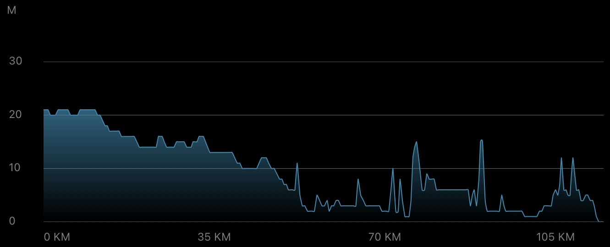

Daily Stats*
| Distance |
115.5 km |
| Time |
6:11:38 h |
| Avg. Speed |
18.6 km/h |
| Max. Speed |
33.6 km/h |
| Avg. Heart Rate |
122 bpm |
| Uphill |
203 m |
| Downhill |
220 m |
| Avg. Temperature** |
30.0 °C |

Elevation profile [m]
Slope profile [%]
*measured by Garmin Forerunner 945 & Sigma ROX 4.0
**measured at the lower back
Daybook
Today was the final leg before the weekend break, going from Veldhoven to Schiedam (near Rotterdam) where I was about to visit friends. It's another long-distance but flat route via Tilburg, Breda and Dordrecht, and due to a slightly lower temperature forecast I reckoned I'd be on the bike for about 6 hours.
In my experience, the last leg after a few days of traveling and right before a well-deserved break is a psychological trap, as you tend to drive faster in order to arrive earlier — which is why I mentally put myself into energy saving mode in the morning. Another trick: keep your sportiest clothes and use them on days like this. If you look like a pro, you might even ride like one :-)
The first kilometers still felt ponderous, but the route then went quickly through smaller villages (Wintelre, Middelbeers and Diessen) and along country roads with good asphalt to Hilvarenbeek. The town area in Hilvarenbeek looked pretty nice, with old-looking, cobbled streets and some cafés, restaurants and little stores near Sint-Petrus-Bandenkerk (see first impression).
From there, the route continued past Tilburg, while the cycle path became less rural and was now more oriented towards the main road. Surprisingly, my energy saving mode was working, and so I managed to cycle the first 40 km with an average heart rate around 110 bpm. I guess it was also helpful that many sections had a length of 3-5 km without the need to stop! Tilburg was then quite straightforwardly connected to Breda, and after a short break at a rail crossing, I left Prinsenbeek towards the north.
Along the A16, with short detours into the countryside, and with the sun approaching its zenith, my next anchor point was the Hollandsch Diep, where I crossed over the Moerdijkbrug to the other side of the river. At this point, the increasing coastal wind could already be felt and, in combination with the rising temperature, I decided to take my first real break of the day after 80 km at the Dordtsche Kil (side arm of the Hollandsch Diep, second impression), along which the cycle path runs.
The remaining 35 km section of the leg was then mostly urban, with the final link to the south of Rotterdam via Dordrecht and Zwijndrecht. I cycled past the Feyenoord stadium and towards the city center over the Erasmus Bridge to my destination in Schiedam. By now, the headwind and the traffic of cyclists were my biggest opponents, so it was all nicer to finally arrive.
This leg concludes the first half of the tour, with around 640 km and 5500 meters up. I'm now going to spend a relaxed weekend at my friends' place, exploring Rotterdam, Delft and Den Haag, visiting the coast and enjoying some good food. Fun fact: the windmills in Schiedam are extremely high (third impression), even without the pilars lying in the canal water. I'll do my next post on Monday evening, until then have a great weekend!
Impressions
 "Sint-Petrus'-Bandenkerk" (St. Peter's church) in Hilvarenbeek
"Sint-Petrus'-Bandenkerk" (St. Peter's church) in Hilvarenbeek
 Lunch break at the Dordtsche Kil
Lunch break at the Dordtsche Kil
 One of the large windmills in Schiedam
One of the large windmills in Schiedam